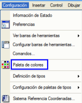
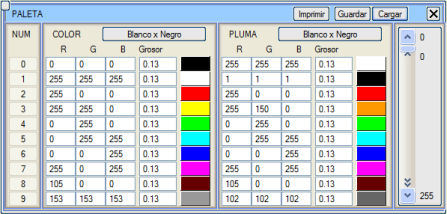
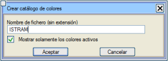
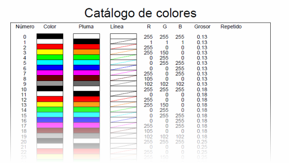

| |
|
RENK PALETİ
|
Renk paleti, Yapılandırma açılır menüsünde bulunur. Renk Paleti menüsüne girdiğimizde, istediğimiz paleti ayarlayabiliriz. Tanımladığımız farklı verilerin renk ve kalınlık özelliklerini içeren bir .pal dosyasını Kaydedebilir veya Yükleyebiliriz. Programın varsayılan olarak kullandığı palet ISPOL.pal'dır. Bu menüde iki ana sütun ayırt edeceğiz. Biri, koyu, siyah arka planlı ekrandaki renkle ilgili olan RENK adında ve diğeri, harita nesnelerinin beyaz arka planda alacağı renge atıfta bulunan KALEM adında. Bu sütunların her birinde, R (kırmızı), G (yeşil), B (mavi) renklerini ve kalınlığı bir sayı ile tanımlayabiliriz. Istram'ın varsayılan olarak yüklediği ISPOL.pal paleti, 10 renk ve 8 kalınlıktan (.13,.18,.25,.35,.5,.7, 1 ve .09) oluşan tam bir dizi, bir gri tonları gamı (80-89) ve iki siena renginin (90 ve 91) tanımlandığı (şimdi 26 ve 17 numaralı çizgiler tarafından kullanılan) boş bir alan (90-104) içerir. Son olarak tam bir kromatik gam (105-254) sunulur. 0, 10, 20, 30, 40, 50 ve 60 renkleri siyah/beyaz (renk/kalem) olup, örneğin siyah üzerine beyaz çizim yapma ihtiyacı durumunda kullanılmak üzere tasarlanmıştır. 
Yazdır komutu aracılığıyla, o an yüklü olan paletin tüm tanımını kağıda yansıtan bir belge elde edebiliriz. Bizden uzantısız bir dosya için bir çıktı adı isteyecek ve bu belgede aktif renkleri gösterip göstermemeyi seçebileceğiz. Sonuç aşağıdaki gibidir: 
|